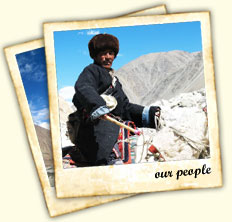
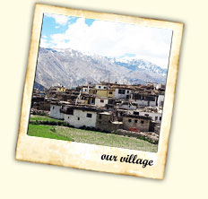

‘You cannot travel the path until you have
become the path itself’… Buddha

‘You cannot travel the path until you have
become the path itself’… Buddha
Across the Kashmir Valley and over the Ancient Zoji La pass nestles a land, ‘Ladakh’, the Land of High Passes. It is a magical land, so completely different from the green landscape of most other parts of the inhabitat Himalayas. Ladakh is nature at its extreme. A land of freezing winds and blazing sunlight, Ladakh is a cold desert lying in the rain shadow of the Great Himalayas and other smaller ranges. Little rain and snow reaches this dry area, where the natural forces have created a fantastic landscape. Ladakh forms a part of the state of Jammu and Kashmir in India. This region is made up of two administrative districts namely Leh District, with its headquarters at Leh, and the Kargil District, with its headquarters at Kargil, and covers a total area of about 59,000 square kilometers.
Ladakh is at an average elevation of 2,700 m to 4,200 m above sea level. The aridity of this region is due to its location in the rain shadow area of the Great Himalayas, elevation and radiation of heat from the bare soil. The region is extremely dry, with an annual rainfall as low as 10cubic centimeter. Greenery is a sign of villages.
Few Places of interest in Ladakh
Nubra Valley
The Nubra Valley means Ldumra (the valley of flowers), situated in the north of Leh. The average altitude of the valley is about 10,000 ft. above the sea level. The main attractions in this area are Bactarian Camels (Shaggy double humped Camel) around the sand dunes, Deskit and Samstanling monasteries and Khardung la Pass (18,380 ft.) above sea level. This Tour can be organized for 3 days/2 nights.
Getting There
The road journey to Nubra valley leads through Khardongla (the highest motor able road in the world) 18380 ft. around 40 kms away from Leh. On crossing the pass, you come across Khardong village, Khalsar and Deskit (the main villages of Nubra valley). Deskit village, Hundar village, Sumur village and Tirit village offers luxury camps, Guest Houses and lower budget hotels. The Camel safari can be organized from Deskit to Hunder village for 2 hours. Hunder village has small monastery and it is located on the ancient Silk Route.
Chang Thang - The land of Nomads
Changthang means Eastern Flat land, is located in the east of Leh on the Chinese border. The average altitude of the area is around 14600m above sea level. This area is also known as Rupsho valley. The main attraction of this area is Changpa nomads, wild animals, Lakes and rare migratory birds.
Tomoriri Lake
The Tsomoriri Lake is a beautiful mountain bounded expanse of water, around 240 Kms from Leh in Rupsho Valley. The Lake is located at 14,000 ft. near a small village named Korzok. The Nomadic people are most outstanding feature of this Lake area, which grazed herd of goats and yaks. The Tsokar (the salt Lake) around 76 kms. from Tsomoriri is also a beautiful and totally different from the Tsomoriri Lake.
Trip to these two Lakes can be organized in two or three days by Jeep and two weeks or three weeks trekking.
Pangong Lake
Pangong lake is 40 miles in length and nearly 2-4 miles in width at a height of 4267m above the sea level What strikes on seeing this lake is the lovely color of its water, especially towards evening, which is of the richest deep blue, over the whole expanse, at morning time, it is of a lighter a very brilliant color. The water of the Lake is not that salty as sea water.
Pangong Tso trip can be organized in two days and overnight stay at simple resorts just beside the Lake. Travellers are not allowed to pitch their tents near the Lake and only allowed to go upto Spangmik due to security reasons. As 75% of the Lake is in China and only 25% is in India. The landscape on the way to Pangong is spectacular.
The land of Aryans
Dhahanu is situated to the south west of Leh, around 163 Kms. passing through the beautiful villages of Kaltsey, Domkhar, Skurbuchan and Achinathang. There are many small villages but only two villages of Dha and Hanu are open for tourist. Being on lower altitude Dhahanu is warmer than Leh.
Attraction
The main attraction of this tour is Drokpa Community considered being as last race of Aryans confined to the valley. Their feature is pure Indo Aryan and they have preserved their racial purity down the Centuries. Their culture and religious practices are very similar to ancient pre- Buddhist religion known as Bon-Chos. This tour can be done in two days.
Temperature
The winter temperature touches as low as minus 30 degree Celsius (Leh & Kargil) and minus 60 degree Celsius in (Drass). Subzero temp. prevails from December to February throughout Ladakh, whereas, zero degree temp. is experienced during rest of the winter months. This results in freezing of all conceivable water resources. During summers the maximum temp. increases from 20 degree C to 38 degree C in July and August
Clothing
Light/Medium woolens in summers to Heavy woolens in winters.
Credit Cards & ATM Machine
Credit cards are accepted by few of the hotels and shops at Leh only, but there will be a nominal service charge. There are three banks that operate in Leh which are, Jammu and Kashmir Bank, State Bank of India and Punjab National Bank and all of them have an ATM Machine each in Leh.

About Leh
Leh is the headquarter of Ladakh District, and the largest town of the region. It is located to the north of the Indus River at an elevation of 3600m above the sea level. The town is marked by the nine-storied Namgyal Palace and Namgyal Tsemo (victory peak), built by Tashi Namgyal on his victorious in reunification of the Upper and Lower Ladakh. Leh became the capital of Stod (upper Ladakh) during the reign of king Graspa Bum- Lde, who ruled Ladakh from 1400 to 1430 AD. In the later period, Leh became an important center for trade in Central Asia. Leh remained merely a headquarter of Ladakh district until 1974, when Ladakh was opened for foreign tourists. Since then Leh became the centre, for tourism related activities in the region.
How to Reach
Overland Approach
Srinagar to Leh - The overland approach to Ladakh from Kashmir Valley via Kargil is approx. 434 Km, which remains open for traffic from early June to November. The most dramatic part of this road journey is the ascent up the 11,500 feet / 3,505 m high Zoji-La, the pass in the Great Himalayan Wall that serves as the gateway to Ladakh. The J & K State Road Transport Corporation (J&K SRTC) operates regular Deluxe and Ordinary bus services between Srinagar and Leh on this route with an overnight halt at Kargil. Taxis are also available at Srinagar for the journey. Groups can charter Deluxe and A-class buses for Leh, Kargil or Padum (Zangskar) from the J & K SRTC at Srinagar.
Manali to Leh - Since 1989, the 473 km. Manali-Leh road has been serving as the second overland approach to Ladakh. Open for traffic from around mid-June to early October. This high road traverses the upland desert plateau of Rupsho, altitude ranges from 3,660m to 4,570m. A number of high passes are crossed before reaching Leh, among which the highest one known as TaklangLa is the world's second highest motorable pass at an altitude of 17,469 ft/5,235m. Shared taxis are also available both from Leh and Manali.
The drive from Manali leads you to the most historical pass of Himachal Pradesh, the Rohtang Pass(3980 m). The landscape surprisingly changes into the rugged brown of the rain shadow area of Lahaul. The landscape changes into naked desert after crossing a few villages of Lahul with prayer flags on their roofs.Your journey finishes at Leh making it a drive of lifetime’s experience.
Road Distances
Air Travel
Indian Airlines www.indian-airlines.nic.in operates regular flights to Leh from Delhi. Two flights in a week from Jammu and once a week form Srinigar. Jet Airways www.jetairways.com and Kingfisher Airlines www.flykingfisher.com also operates daily flights between Leh-Delhi.
Languages Spoken
Ladakhi is the main language of Ladakh. Other languages spoken are Balti, Shina, Brokshat and Changshat. In hotels and restaurants, staffs speak English and Hindi, while tourist guides are well versed with the languages.
Permit and Passport
Tourist don't require permit for Leh, however, all foreigners are required to be registered at Drass, Rumtse and Serchu if they are travelling overland. Those traveling by air get themselves registered at airport. Tourists are required to get permit for restricted areas like Tsomoriri, Tsokar and Pangong Lakes, Dhahanu and Nubra Valley, which can be obtained from District Magistrate, Leh. We can also arrange that for you.

+91 9622952207 / 9419319799
info@ladakhcalling.com